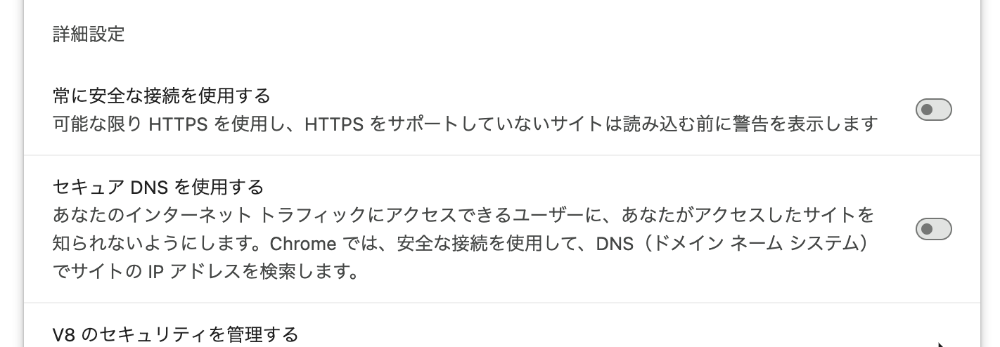

HTTPプロキシ必須なWi-FiではChromeのセキュアDNSをオフにする
MacでWi-Fiを使おうと接続したがインターネットに繋がらない。
HTTPプロキシの設定が必須なようなので、設定しても繋がらない。
ERR_PROXY_CONNECTION_FAILED エラーが出る。
iPhoneでは問題なくつながる。 MacのGoogle Chromeではダメだったが、Safariではつながるようだった。
ファイアウォールの設定やプロキシ設定の見直しなど見直したがどれもダメ。 Safariではつながるので、Chrome側の設定に問題があると判断。
よ〜く設定を見てみると、「セキュアDNSを使用する」という項目が有効になっていた。 無効化したところ、問題なく接続できるようになった。

「セキュアDNSを使用する」は、ChromeがWebサイトにアクセスする時、Google Public DNS などの暗号化されたDNSを使うようにするための設定。Wi-FiやプロキシとDNSの相性が悪かったのかもしれない。